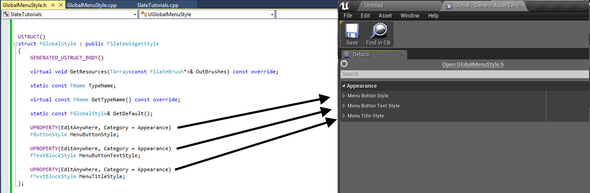
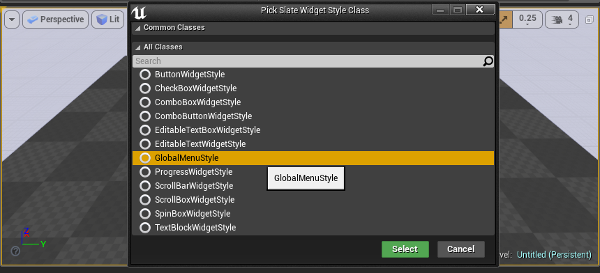
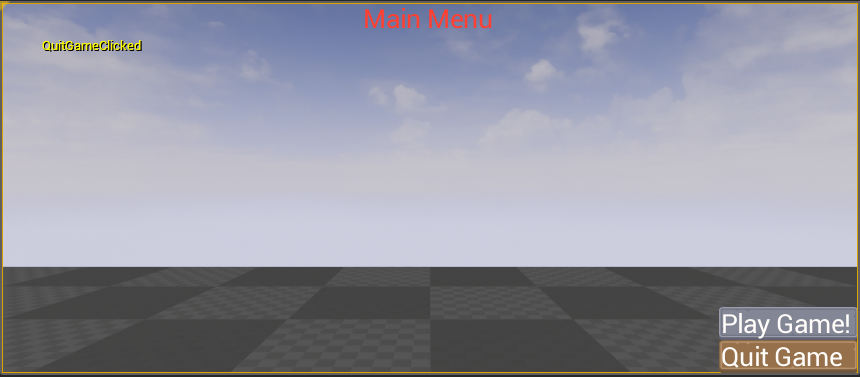

Template:Slate Style Sets Part 2
Contents
Creating In-Game Menus with Slate/C++, Part 2
Overview
Original Author Minalien
Welcome to the second part of my tutorial series on creating game menus with Slate & C++ in Unreal Engine 4! If you’re just joining us, you can catch up with the first tutorial here. In the last tutorial, we created a very simple and rather… bland title screen/main menu for our game using Slate. A lot of you may have been put off, as I was, toward this form of menu creation because the menus at the moment really look more like an application on our system, rather than the type of beautiful interface that should accompany a game! Today, we’re going to solve that problem by introducing Styles! Using these, we can change our generic “application buttons” to look like the types of weapons we want to see in our game! For this tutorial, I am going to use textures from the UI Pack: RPG Extension by Kenney.nl, available over at one of my favorite resources for game art: OpenGameArt.org. Please note that much of what I present here is based heavily on how Epic Games handled things in the Strategy Game sample. You can download the project files here (~209KB).
Step 1: Style Set!
The first thing that we’re going to set up is a Style Set, which will be used to load and reference our styles. The styles themselves will be specified within the Unreal Editor, giving us a lot of control over the designs without having to recompile the code (which we currently have to do for both style and layout changes). The Style Set we set up, which I will call MenuStyles, will be a purely static class.
MenuStyles.h
// Copyright 1998-2015 Epic Games, Inc. All Rights Reserved.
// MenuStyles.h - Provides our Style Set and allows us to load and reference UI Styles specified in-editor.
#pragma once
#include "SlateBasics.h"
class FMenuStyles
{
public:
// Initializes the value of MenuStyleInstance and registers it with the Slate Style Registry.
static void Initialize();
// Unregisters the Slate Style Set and then resets the MenuStyleInstance pointer.
static void Shutdown();
// Retrieves a reference to the Slate Style pointed to by MenuStyleInstance.
static const class ISlateStyle& Get();
// Retrieves the name of the Style Set.
static FName GetStyleSetName();
private:
// Creates the Style Set.
static TSharedRef<class FSlateStyleSet> Create();
// Singleton instance used for our Style Set.
static TSharedPtr<class FSlateStyleSet> MenuStyleInstance;
};
The methods here are fairly self-explanatory (when aren’t they?). In a minute, we will add to our Game Module (don’t worry, it’s not as scary as it sounds!) to call our Initialize and Shutdown methods. Get() will be used later when we actually need to use the Style Set to load a particular Style, while GetStyleSetName is used to retrieve the name of our style set for use by the engine. The implementation for these methods is equally simple:
MenuStyles.cpp
// Copyright 1998-2015 Epic Games, Inc. All Rights Reserved.
#include "SlateTutorials.h"
#include "MenuStyles.h"
#include "SlateGameResources.h"
TSharedPtr<FSlateStyleSet> FMenuStyles::MenuStyleInstance = NULL;
void FMenuStyles::Initialize()
{
if (!MenuStyleInstance.IsValid())
{
MenuStyleInstance = Create();
FSlateStyleRegistry::RegisterSlateStyle(*MenuStyleInstance);
}
}
void FMenuStyles::Shutdown()
{
FSlateStyleRegistry::UnRegisterSlateStyle(*MenuStyleInstance);
ensure(MenuStyleInstance.IsUnique());
MenuStyleInstance.Reset();
}
FName FMenuStyles::GetStyleSetName()
{
static FName StyleSetName(TEXT("MenuStyles"));
return StyleSetName;
}
TSharedRef<FSlateStyleSet> FMenuStyles::Create()
{
TSharedRef<FSlateStyleSet> StyleRef = FSlateGameResources::New(FMenuStyles::GetStyleSetName(), "/Game/UI/Styles", "/Game/UI/Styles");
return StyleRef;
}
const ISlateStyle& FMenuStyles::Get()
{
return *MenuStyleInstance;
}
During Initialize(), we determine if the MenuStyleInstance (our singleton pointer) is valid (that is, not null). If it isn’t valid, we instantiate it and then register the style set with the Slate Style Set Registry. Then, in Shutdown() we do the opposite – we un-register the style, make sure our pointer is unique (it should always be unique, in this case), and then we reset it (setting the pointer to null). For GetStyleSetName, we simply cache an FName for our style as a static variable, and always return that value. Finally, we have a simple accessor method for getting our style set singleton.
Step 2: Tying into your Game Module
While your code now compiles, it isn’t quite operational yet. We never made calls to our static methods! If you’ve never had reasons to make changes to your game module, you may never even have known you could, but bear with me for a moment – it’s really easy. Jump into your game module’s source file (SlateTutorials.cpp in my case), and you should really only have two lines: one that includes your module’s header and something akin to the following: IMPLEMENT_PRIMARY_GAME_MODULE( FDefaultGameModuleImpl, SlateTutorials, "SlateTutorials" ); Notice the FDefaultGameModuleImpl? That’s the class being used for your game module. Many people will never have to deal with anything else – but we need to tie into the game module to initialize our style set! How do we do this? Well, Epic’s practice (and therefore the one I’m going with) seems to be simply defining the module class right in here – but bear in mind that it will almost always be a better idea to split your class into the header & source file if you’re doing anything more complex than what we’re doing here.
#include "SlateTutorials.h"
#include "MenuStyles.h"
//Custom implementation of the Default Game Module.
class FSlateTutorialsGameModule : public FDefaultGameModuleImpl
{
// Called whenever the module is starting up. In here, we unregister any style sets
// (which may have been added by other modules) sharing our
// style set's name, then initialize our style set.
virtual void StartupModule() override
{
//Hot reload hack
FSlateStyleRegistry::UnRegisterSlateStyle(FMenuStyles::GetStyleSetName());
FMenuStyles::Initialize();
}
// Called whenever the module is shutting down. Here, we simply tell our MenuStyles to shut down.
virtual void ShutdownModule() override
{
FMenuStyles::Shutdown();
}
};
IMPLEMENT_PRIMARY_GAME_MODULE(FSlateTutorialsGameModule, SlateTutorials, "SlateTutorials");
Nothing too crazy here, right? We’re simply defining a custom module class that simply extends what we had before, and add in some necessary calls to initialize and shut down our game module. Note that we take the time to un-register any slate styles that share our Style Set’s name — just in case any other modules introduced one with the same name (I… don’t know how necessary that is, to be honest, but it was in the Strategy sample – better to have and not need, I suppose).
Step 3: Creating a Style class!
Now that we have our style set, let’s go ahead and create a class that we can use to establish and customize our menu styles. There are many, many ways you can do this to suit your layout needs. I tend to have a single “global” style that defines things such as standard button styles, then create widget-specific style sets if a custom widget (such as our Main Menu UI) only exists in one or two spaces. So how do we do this? Simple! We’ll create a new GlobalMenuStyle class (and a GlobalStyle struct… you’ll see in a minute).
GlobalMenuStyle.h
// Copyright 1998-2015 Epic Games, Inc. All Rights Reserved.
// GlobalMenuStyle.h - Provides a global menu style!
#pragma once
#include "SlateWidgetStyleContainerBase.h"
#include "SlateWidgetStyle.h"
#include "SlateBasics.h"
#include "GlobalMenuStyle.generated.h"
// Provides a group of global style settings for our game menus!
USTRUCT()
struct FGlobalStyle : public FSlateWidgetStyle
{
GENERATED_USTRUCT_BODY()
// Stores a list of Brushes we are using (we aren't using any) into OutBrushes.
virtual void GetResources(TArray<const FSlateBrush*>& OutBrushes) const override;
// Stores the TypeName for our widget style.
static const FName TypeName;
// Retrieves the type name for our global style, which will be used by our Style Set to load the right file.
virtual const FName GetTypeName() const override;
// Allows us to set default values for our various styles.
static const FGlobalStyle& GetDefault();
// Style that define the appearance of all menu buttons.
UPROPERTY(EditAnywhere, Category = Appearance)
FButtonStyle MenuButtonStyle;
// Style that defines the text on all of our menu buttons.
UPROPERTY(EditAnywhere, Category = Appearance)
FTextBlockStyle MenuButtonTextStyle;
// Style that defines the text for our menu title.
UPROPERTY(EditAnywhere, Category = Appearance)
FTextBlockStyle MenuTitleStyle;
};
// Provides a widget style container to allow us to edit properties in-editor
UCLASS(hidecategories = Object, MinimalAPI)
class UGlobalMenuStyle : public USlateWidgetStyleContainerBase
{
GENERATED_UCLASS_BODY()
public:
// This is our actual Style object.
UPROPERTY(EditAnywhere, Category = Appearance, meta = (ShowOnlyInnerProperties))
FGlobalStyle MenuStyle;
// Retrievs the style that this container manages.
virtual const struct FSlateWidgetStyle* const GetStyle() const override
{
return static_cast<const struct FSlateWidgetStyle*>(&MenuStyle);
}
};
This one is a little bit lengthy, but (like all of them) isn’t overly complicated. First, we’ve got the GetResources method – if you are using any Slate Brushes (for example, to define properties of an SImage widget), you want to register these with OutBrushes. In our case, our Button & Text Block styles aren’t brushes, so we don’t have to do anything within this method. Next, we have the GetTypeName method – this method gives the name of the type, which should match the actual type name. This is used to reference what type, exactly, this widget is. The GetDefault() method allows us to set some defaults – for example, we could set the default font or size for our title screen, if we wanted. Finally, we have three properties. The first and second both relate to buttons – Buttons (the SButton widget) actually take two styles – one for the button itself, and one for the text block representing the text on the button. The third property, then is, our menu title text. However, this one struct isn’t enough! We actually have a class that acts as the container base – this is what allows us to expose the slate style’s properties as an asset in the editor. Even simpler than the definition is the implementation:
GlobalMenuStyle.cpp
// Copyright 1998-2015 Epic Games, Inc. All Rights Reserved.
#include "SlateTutorials.h"
#include "GlobalMenuStyle.h"
void FGlobalStyle::GetResources(TArray<const FSlateBrush*>& OutBrushes) const
{
}
const FName FGlobalStyle::TypeName = TEXT("FGlobalStyle");
const FName FGlobalStyle::GetTypeName() const
{
static const FName TypeName = TEXT("FGlobalStyle");
return TypeName;
}
const FGlobalStyle& FGlobalStyle::GetDefault()
{
static FGlobalStyle Default;
return Default;
}
UGlobalMenuStyle::UGlobalMenuStyle(const FObjectInitializer& ObjectInitializer)
: Super(ObjectInitializer)
{
}
Most of these methods are empty – after all, we don’t have any brushes to register and I’m not going to get into setting defaults (it’s literally as easy as changing the properties on your styles within the GetDefault() method). Just make sure that your GetTypeName() returns an FName that matches your style struct’s name!

Step 4: Defining your Style
Now that we’ve got our styles set up, don’t you think it’s time to go in and define them? It is! Start up Unreal, and create a new folder in your Asset Browser called UI, and then a new folder called Styles inside there. To create the actual Style definition, create a new Slate Widget Style asset (User Interface -> Slate Widget Style). You’ll be prompted to select the widget style container – choose GlobalMenuStyle, and name your new asset Global (if you name it something else, remember the name you use for later). Go ahead and open it up, and adjust your properties to something you like – feel free to import some images to use for your buttons! That’s what I’ve done for the sample code available with this tutorial. Don’t get too caught up in it yet, however, as we aren’t actually using our style yet! Which brings us to…

Using your Style!
So we’ve defined our style, set up some pretty settings, but how do we actually use this!? Prepare yourselves… for difficult, arduous challenges await! But only once you’ve finished making your UIs and get started on your gameplay, because assigning styles for your UI is trivial. First, add the following member variable to your Main Menu UI widget: const struct FGlobalStyle* MenuStyle; Then, go into your source file, and add two headers inclusions:
#include "GlobalMenuStyle.h"
#include "MenuStyles.h"
MainMenuUI.h
// Copyright 1998-2015 Epic Games, Inc. All Rights Reserved.
#pragma once
#include "SlateBasics.h"
class SLATETUTORIALS_API SMainMenuUI : public SCompoundWidget
{
public:
SLATE_BEGIN_ARGS(SMainMenuUI)
{}
SLATE_ARGUMENT(TWeakObjectPtr<class AMainMenuHUD>, MainMenuHUD)
SLATE_END_ARGS()
void Construct(const FArguments& InArgs);
/**
* Click handler for the Play Game! button – Calls MenuHUD’s PlayGameClicked() event.
*/
FReply PlayGameClicked();
/**
* Click handler for the Quit Game button – Calls MenuHUD’s QuitGameClicked() event.
*/
FReply QuitGameClicked();
TWeakObjectPtr<class AMainMenuHUD> MainMenuHUD;
const struct FGlobalStyle* MenuStyle;
};
MainMenuUI.cpp
// Copyright 1998-2015 Epic Games, Inc. All Rights Reserved.
#include "SlateTutorials.h"
#include "MainMenuUI.h"
#include "GlobalMenuStyle.h"
#include "MenuStyles.h"
BEGIN_SLATE_FUNCTION_BUILD_OPTIMIZATION
void SMainMenuUI::Construct(const FArguments& args)
{
MainMenuHUD = args._MainMenuHUD;
MenuStyle = &FMenuStyles::Get().GetWidgetStyle<FGlobalStyle>("Global");
ChildSlot
[
SNew(SOverlay)
+ SOverlay::Slot()
.HAlign(HAlign_Center)
.VAlign(VAlign_Top)
[
SNew(STextBlock)
.TextStyle(&MenuStyle->MenuTitleStyle)
.Text(FText::FromString("Main Menu"))
]
+ SOverlay::Slot()
.HAlign(HAlign_Right)
.VAlign(VAlign_Bottom)
[
SNew(SVerticalBox)
+ SVerticalBox::Slot()
[
SNew(SButton)
.ButtonStyle(&MenuStyle->MenuButtonStyle)
.TextStyle(&MenuStyle->MenuButtonTextStyle)
.Text(FText::FromString("Play Game!"))
.OnClicked(this, &SMainMenuUI::PlayGameClicked)
]
+ SVerticalBox::Slot()
[
SNew(SButton)
.ButtonStyle(&MenuStyle->MenuButtonStyle)
.TextStyle(&MenuStyle->MenuButtonTextStyle)
.Text(FText::FromString("Quit Game"))
.OnClicked(this, &SMainMenuUI::QuitGameClicked)
]
]
];
}
END_SLATE_FUNCTION_BUILD_OPTIMIZATION
FReply SMainMenuUI::PlayGameClicked()
{
if (GEngine)
{
GEngine->AddOnScreenDebugMessage(-1, 3.f, FColor::Yellow, TEXT("PlayGameClicked"));
}
// actually the BlueprintImplementable function of the HUD is not called; uncomment if you want to handle the OnClick via Blueprint
//MainMenuHUD->PlayGameClicked();
return FReply::Handled();
}
FReply SMainMenuUI::QuitGameClicked()
{
if (GEngine)
{
GEngine->AddOnScreenDebugMessage(-1, 3.f, FColor::Yellow, TEXT("QuitGameClicked"));
}
// actually the BlueprintImplementable function of the HUD is not called; uncomment if you want to handle the OnClick via Blueprint
//MainMenuHUD->QuitGameClicked();
return FReply::Handled();
}
Summary
And voila! Your menu is now styled! Here’s a breakdown of what we’ve done. First, after binding our HUD we actually load the Slate Widget style through our FMenuStyles class from earlier. Next, we adjust the STextBlock that represents our game’s title to add a call to TextStyle(), passing the address of our Title text style. This is exactly the same as property adjustments in Slate! For our two buttons, we actually assign two styles. First, we assign our button style, then we assign the text style – not too much to worry about here, right? MainMenu-Styled Congratulations! You now have a menu with some stylized buttons! Compile and load up your game, then test your main menu!

Source code: (~709KB)